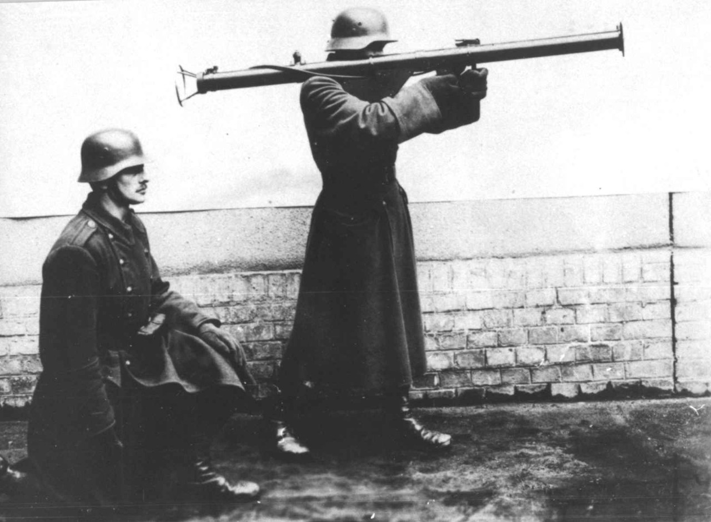
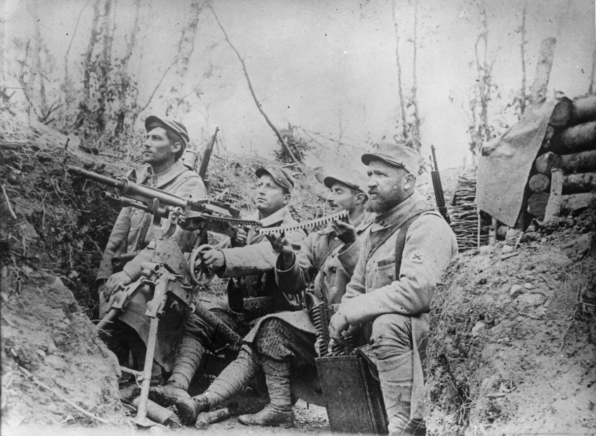
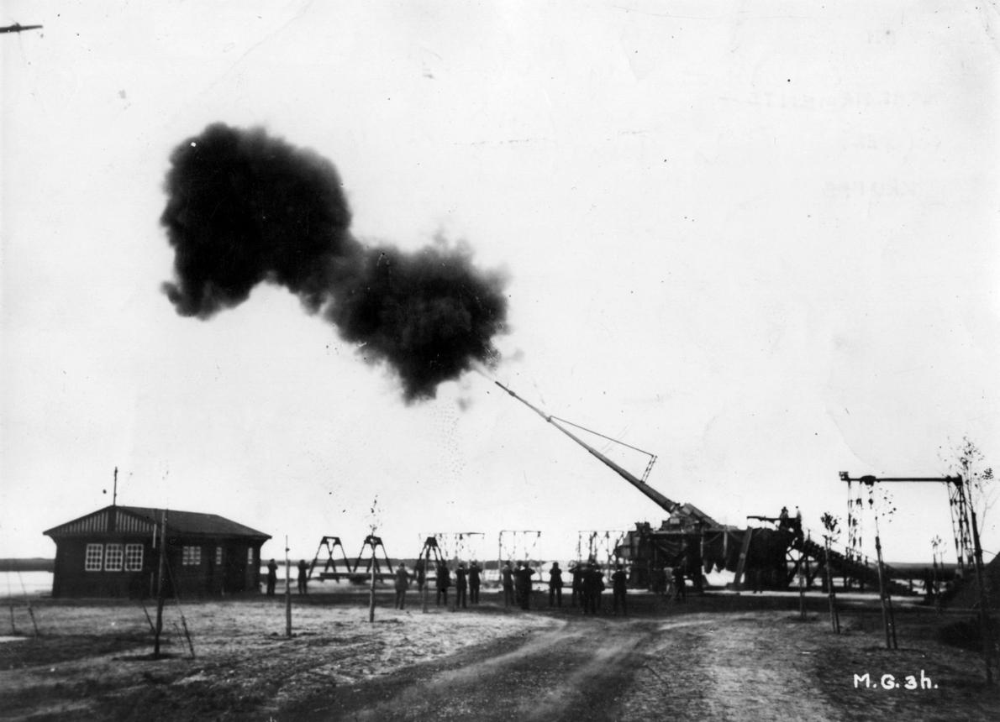
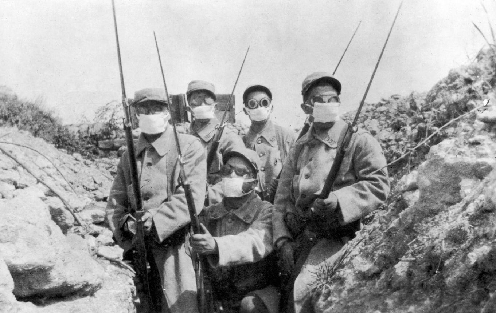
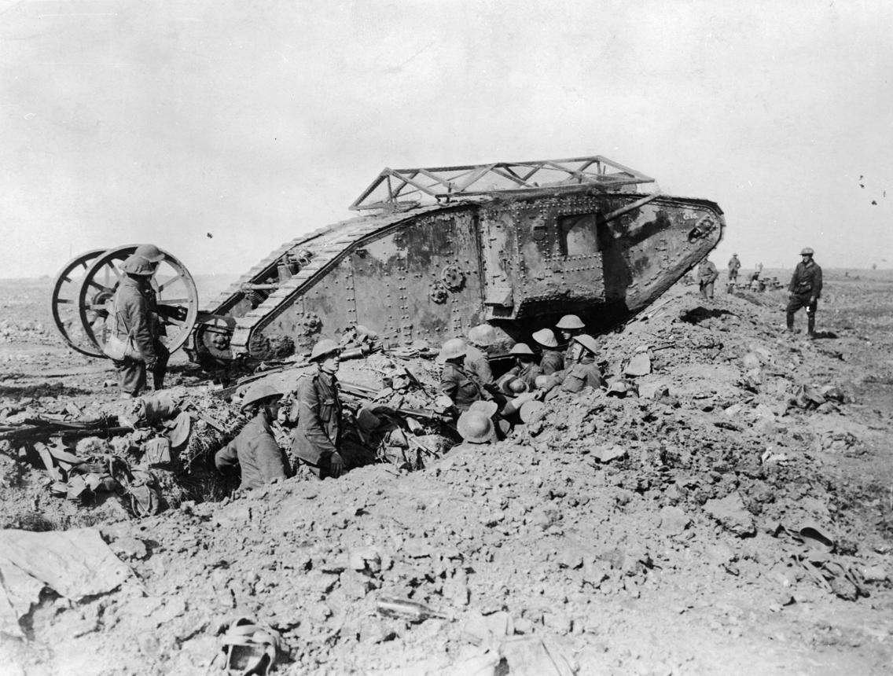
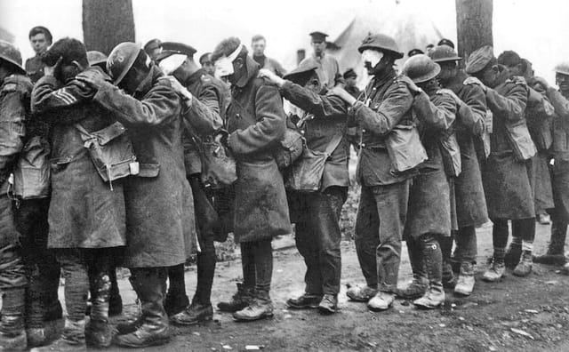

💨 "Illatos" történelmi utazás a múltba
Puskák, pisztolyok és bajonettek voltak a katonák alapfegyverei.

A géppuskák hatalmas tűzerőt biztosítottak és megállították a támadásokat.

Az ágyúk és tarackok okozták a legtöbb pusztítást a háborúban.

Mérges gázokat is bevetettek, ami új és félelmetes harcmodor volt.

Megjelentek az első tankok és repülőgépek is a csatatéren.

Magyarország az Osztrák–Magyar Monarchia részeként vett részt a háborúban. A magyar katonák számos fronton harcoltak, például az orosz és az olasz fronton.
Kiemelkedő volt a magyar huszárok bátorsága és a hadsereg kitartása nehéz körülmények között.
